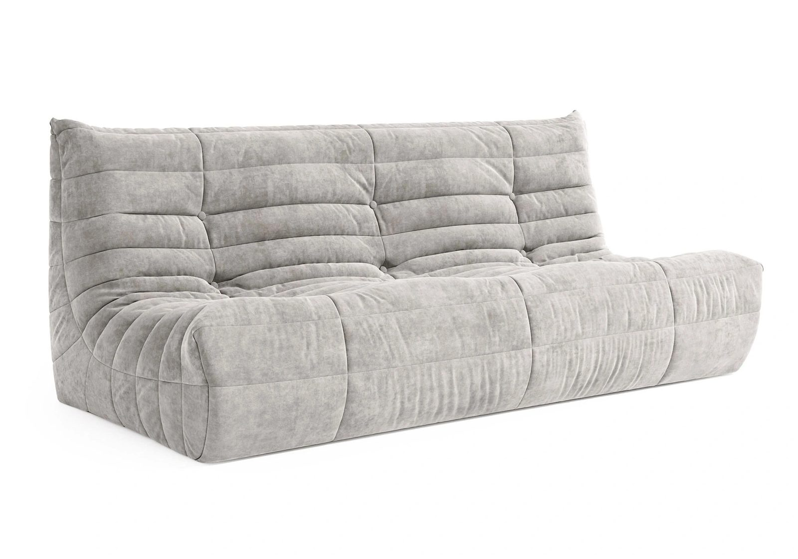
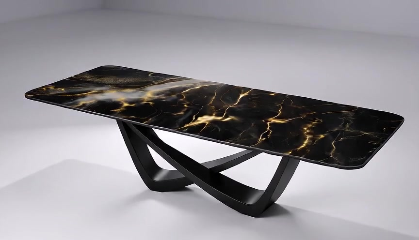
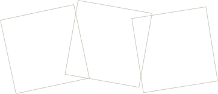
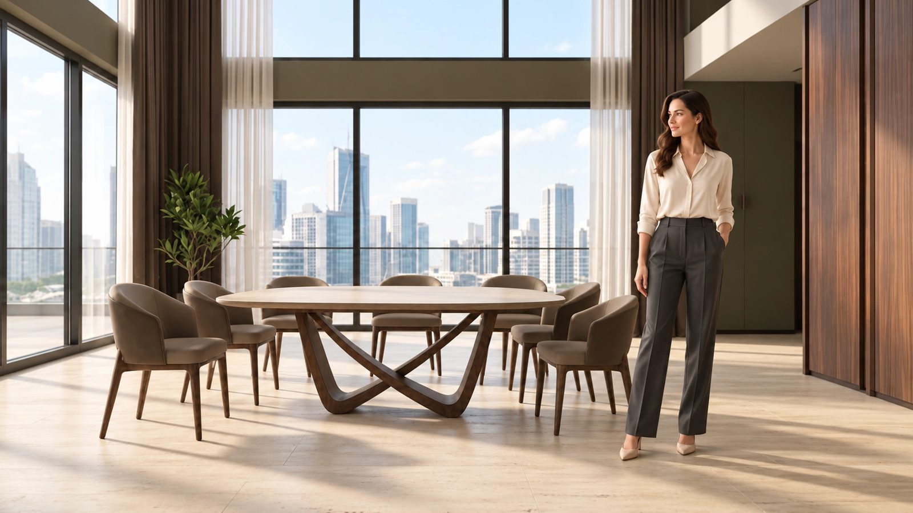
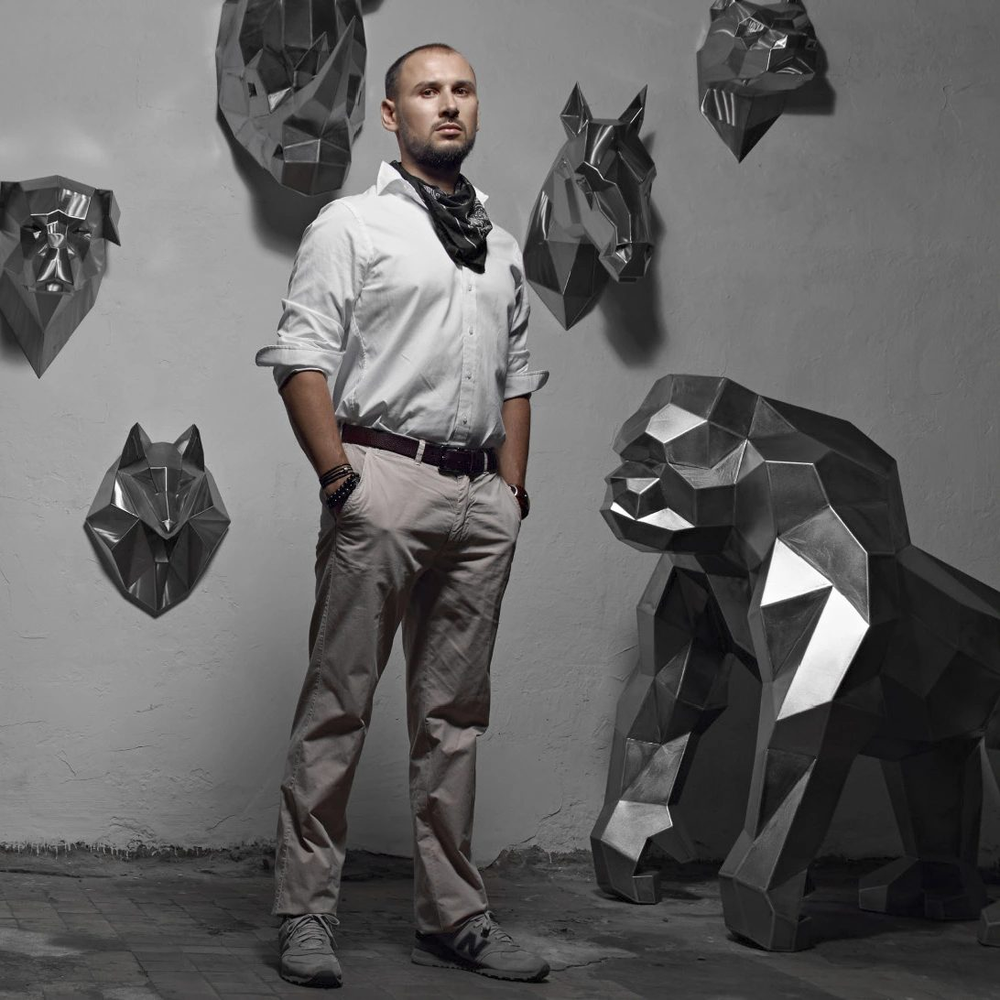
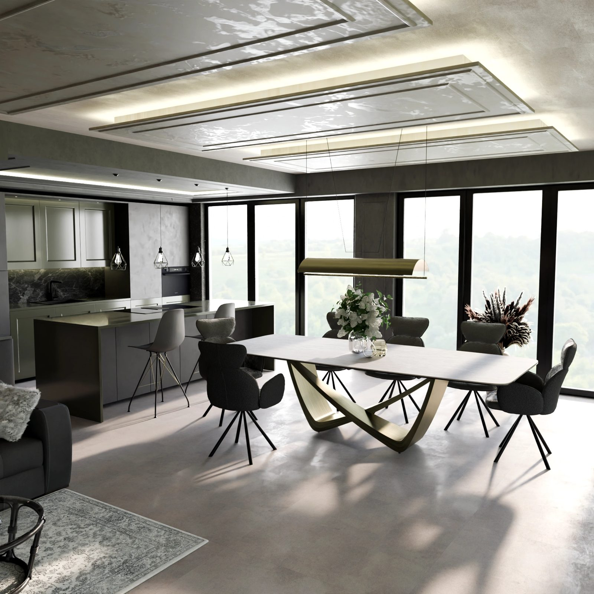

МЕБЕЛЬ / ИСКУССТВО / IDODOM
Форма
вашей жизни.
Мебель, интерьер и искусство. Ваш выбор.
Изучить интерьерФорма в движении

IDODOM / ПРЕДМЕТ И ПРОСТРАНСТВО
Пространство,
которое говорит о вас.
Столы, мягкая мебель, стулья и авторские фигуры. Сочетайте формы, рассматривайте детали и выбирайте предметы, которые откликаются вам.
ИЗУЧИТЬ ИНТЕРЬЕР
В центре
вашей жизни.
Общий план, масштаб комнаты и место человека в интерьере.
Выбрать раздел
Постановочная AI-сценаО НАС / АВТОР ПОЛИГОНАЛЬНЫХ ФИГУР
Человек
за формой.

Андрей Казанцев
Скульптор из Екатеринбурга, автор мастерской «Казанцев Арт» (DirtCustoms). Создаёт полигональные скульптуры из металла для интерьеров и открытых пространств.
В коллекции IDODOM его фигуры встречаются с мебелью и становятся частью вашей композиции.
Об автореКОЛЛЕКЦИЯ IDODOM
Предметы,
которые близки.
Четыре направления.
Наведите на полосу — и откройте свой предмет.
На телефоне нажмите на название, чтобы раскрыть полосу.

МЕСТО ДЛЯ ВАШЕГО РИТМА
Предметы.
И жизнь вокруг.
Общий план помогает почувствовать масштаб. Детали позволяют увидеть характер.
В пространствеБЛИЖЕ К ПРЕДМЕТУ / БРОНКС
Каждая линия
имеет значение.
Рассмотрите силуэт и фактуру на оригинальных изображениях. Здесь показано исполнение со светлой столешницей.
Обсудить исполнениеГАЛЕРЕЯ IDODOM
Ракурсы.
Характеры. Сочетания.
Смотреть всю галереюЖУРНАЛ IDODOM